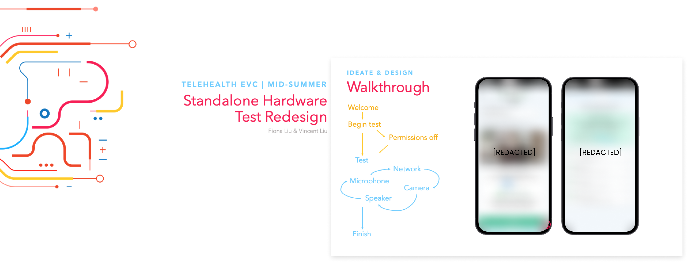

Epic, formally known as Epic Systems, is the leading Electronic Medical Records (EMRs) software company in the United States, based in Madison, Wisconsin. As a Summer 2023 User Experience Designer Intern here, I had the opportunity to own a project within their Telehealth application, alongside a paired Software Developer Intern.
Summer Internship
Epic Systems
User research, sketching, wireframing, prototyping, user-testing
May 2023 - Aug 2023
Note: Because Epic and I have an NDA protecting company work, all of the frames below are low-fidelity, intended to just give a sense of the project!
Epic’s Telehealth application is dedicated to building software that enables patients to have access to healthcare from wherever they are. Their primary service is through the Epic Video Client (EVC), which is Epic’s homegrown browser-based videotelephony platform.
As part of preparation for a Telehealth video visit, patients are encouraged to test their device to make sure that it’s working and ready to go. How they do this, is through a hardware test, and EVC currently has two:

We worked on redesigning the Standalone Hardware Test, following customers concerns over its current interface.
The time frame of the internship didn’t allow us to conduct formal user interviews, as contact and research with patients is done through a regulated process, but we looked to testing later on to validate our assumptions.
I documented an assessment of the current interface within the internal heuristic evaluation system, and found violations in the following of Nielson Norman Group’s 10 Usability Heuristics for User Interface Design:
I then took a look at the existing structures and successes of other hardware tests and noticed variations in:

Within the Feedback METHOD, I found an interesting difference in Automated vs. Self-Directed testing that would impact the structure of our test later.

With all of these swirling understandings of the project, I decided that a Design Sprint might be the best way to resolve and flesh out any lingering questions and considerations in our problem space, as well as spark ideas for design and catch potential issues of our current trajectory.
I invited five other User Experience Designers, two Quality Managers, and three Software Developers for an intense 3 hour rapid brainstorm and sketch session, and we came up with a lot of valuable discussion and raw material...

...which I was then able to convert into some really useful affinity maps!
Our problem statement then accumulated into...
...with main goals being:
I made and played around with 2,000+ mockups so not all could fit here! The following section will showcase samples from each stage of iteration, as well as some of our milestone decisions.
Drawing from our Design Sprint collection, I sketched up some ideas.

I then played around with some of our concepts through some lo-fi mockups of mobile and desktop.
Users can still choose what they want, but there is also circular navigation within the tests:
Should the user choose to follow the circular navigation, the finish button appears when all the tests are complete. Here, since the user wanted to test Microphone first and continue, the finish button appears at the Speaker test.
Our project team visualized milestone decisions best in hi-fi, so that was the stage in which we spent a good chunk of time! During this stage, we focused on mobile.
At this point was our Mid-summer Presentation, where we got some good feedback, as well as internally reflected as a project team on our progress and direction.
Though we received praise for our compromise with Blended, we as a project team felt that our decisions had been too skewed by our feedback demographic’s higher technological skill, and wanted to revisit the scope of our target user.
The customer that had sparked this project was available for a call, and our discussion with them helped narrow our focus.
From there, we created a persona that would better set us up for our target user!
With this narrower scope, we were able to continue more confidently in our hi-fis.
We were unsure about our choice to place troubleshooting at the end, and decided it might be best to inform our decision with some usability testing. We structured it as a task-based run-through of the test, as our goal was to observe interactions in workflow.
The consensus was clear: the anxiety of getting an error and having to wait to resolve it outweighs the anxiety from the error.
We ran another task-based run-through of the test to validate our changes, and were met with positive reactions!
MOBILE
DESKTOP


All of this accumulated into our final presentation at Demo Days, where we got to showcase all of our hard work from the summer!